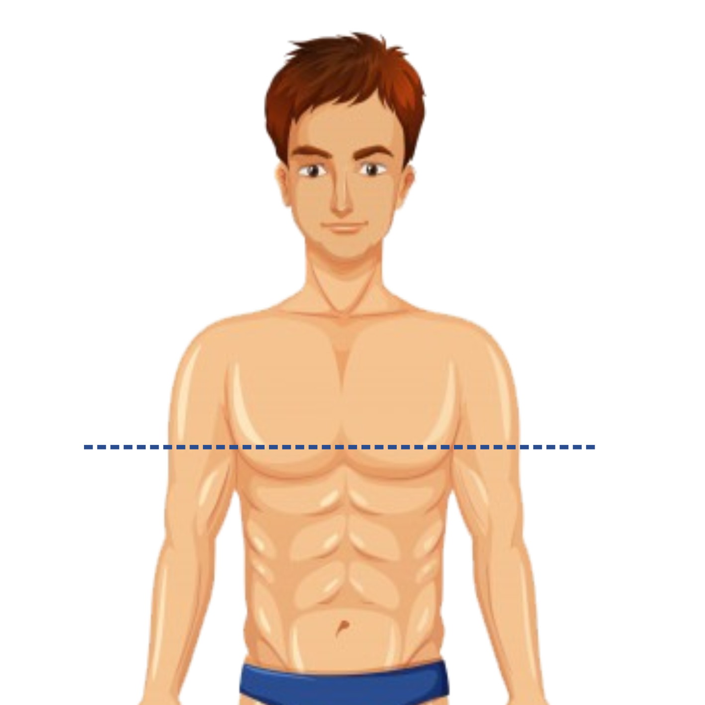
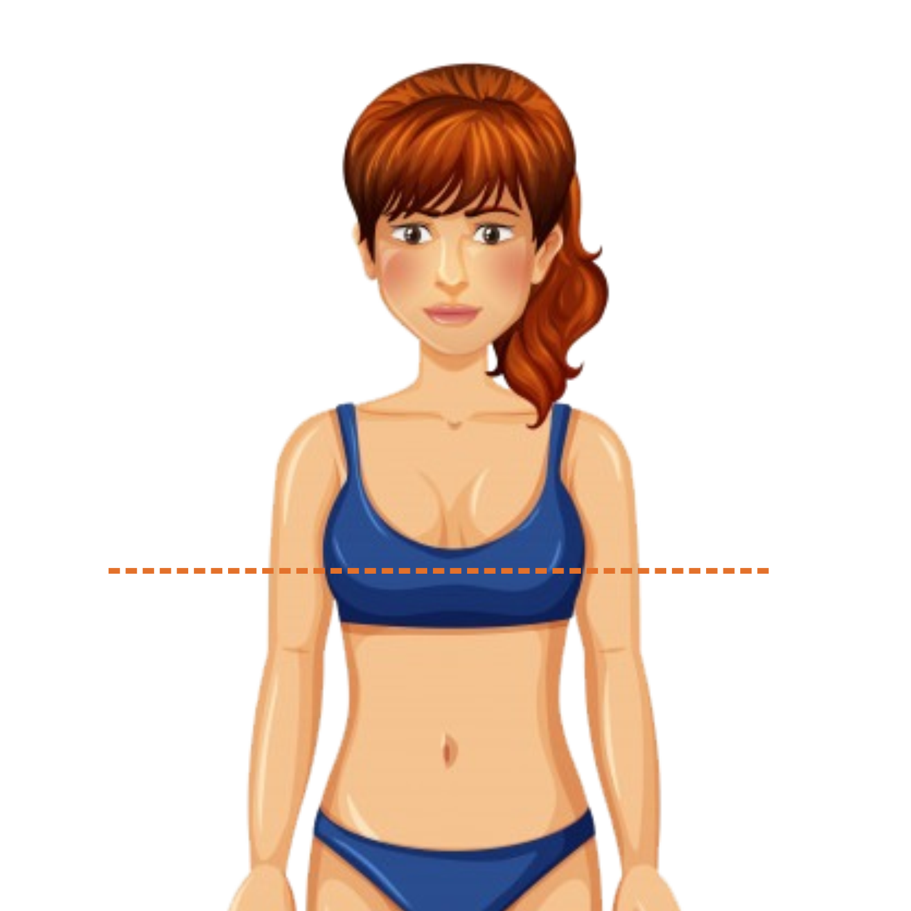

<!--
  Generated template for the AcBustoPage page.

  See http://ionicframework.com/docs/components/#navigation for more info on
  Ionic pages and navigation.
-->
<ion-header>

  <ion-navbar color="cinza1">
    <ion-title>Busto</ion-title>
  </ion-navbar>

</ion-header>


<ion-content>

   
   

   <ion-list>
     <h2>Medida do busto</h2>
     <ion-item><ion-input type="text" text-center [(ngModel)]="busto.busto"></ion-input></ion-item>
   </ion-list>

  <button ion-button block padding color="amarelo1" (click)="continuar()">Continuar</button>

</ion-content>
